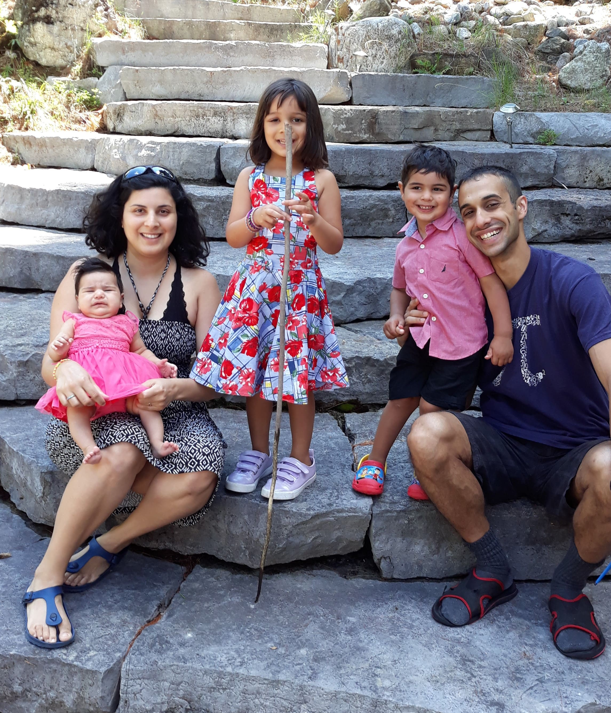

I was born and raised in Perth, Australia where I lived until I moved to Melbourne in 2008 for my undergrad. I lived at Queen's College during my time at the University of Melbourne, and moved to Kitchener-Waterloo in Canada in 2011. After a stint in 2018 and 2019 in Winnipeg, and a stint in Montréal from 2020 to 2022, I now live in back in Kitchener-Waterloo with my wife and three children.
Aside from mathematics and attempting to prevent children from ganging up on each other, I enjoy a game of squash, riding my bike, playing guitar and puzzles (some would argue the latter does not count as 'aside from mathematics').
Guitaristically, my idol is Tommy Emmanuel, I am completely in awe of just about anything that Chris Thile touches, and I think I'm With Her are one of the best bands going around at the moment. I played in a folk band and a jazz band during my first stint in Kitchener, and am now looking for new projects!
My sister, the more successful of the Ghaswala offspring, runs her own website called Good Parsi Wife. It's definitely worth a visit if you like food, or children. Or getting your children to help out in the making of said food!